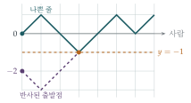

STEP I 2011, 문제 12
계속 읽기 전에 문제를 먼저 읽어 보자. 문제는 STEP Support Programme의 문제 데이터베이스에 있다: step.maths.org/questions/11-s1-q12
도입
\(\frac{m}{m+1}\), \(\frac{m-1}{m+1}\), \(\frac{m-2}{m+1}\)라는 패턴은 그냥 지나치기 어렵다. £2 동전을 가진 사람이 \(n\)명이면 답은 분명 \(\frac{m - n + 1}{m + 1}\)일 것이다. 실제로 그렇다. 그리고 가장 매끄러운 증명은 조합론(combinatorics)에서 가장 우아한 아이디어 가운데 하나인 반사 원리(reflection principle)이다. 이 원리는 그림의 일부를 직선에 대하여 반사시켜, 세기 어려운 것(거스름돈이 한 번도 떨어지지 않는 줄)을 세기 쉬운 것으로 바꾸어 준다.
같은 문제는 여러 모습으로 나타난다. 개표하는 동안 당선자가 한 번도 뒤지지 않는 선거(1887년 베르트랑(Bertrand)의 투표 문제(ballot problem)), 끝내 파산하지 않는 도박꾼, 올바르게 짝지어진 괄호 등이 그 예이다. \(m = n\)일 때 이 개수는 카탈랑 수(Catalan numbers)가 되는데, 이것은 아마도 조합론에서 이항계수(binomial coefficients) 다음으로 자주 등장하는 수열일 것이다.
시작하기 전에
£1 손님은 동전을 하나씩 주고, £2 손님은 (거스름돈으로) 동전을 하나씩 가져간다. 언제 막히게 되는가?
가지고 있는 £1 동전의 개수를 추적하자. 이 개수는 £1 손님마다 \(1\)씩 늘고, £2 손님마다 \(1\)씩 준다. 막히는 것은 정확히 동전이 하나도 없을 때 £2 손님이 오는 경우, 곧 개수가 \(-1\)이 되려는 경우이다. 따라서 성공할 필요충분조건은 줄의 모든 지점에서 그때까지의 £1 손님 수가 그때까지의 £2 손님 수 이상인 것이다.
차근차근 풀기
단계 1 £2 동전이 하나일 때
\(n = 1\)이면 £2 손님이 맨 앞에 있을 때만 실패한다. £2 손님은 \(m + 1\)개의 자리 중 어느 자리에나 같은 확률로 있을 수 있으므로 \[\mathrm{P}(\text{성공}) = 1 - \frac{1}{m + 1} = \frac{m}{m + 1}. \qed\]
단계 2 £2 동전이 둘일 때
첫 번째 사람은 반드시 £1 동전을 가지고 있어야 한다. 두 번째 사람에게는 어떤 일이 일어날 수 있으며, 각 경우에 어떤 상황에 놓이게 되는가?
첫 번째 사람이 £1 동전을 가지고 있을 확률은 \(\frac{m}{m+2}\)이고, 그렇지 않으면 곧바로 실패한다. 그러면 동전을 하나 가지게 되고, 남은 줄에는 £1을 가진 사람 \(m - 1\)명과 £2를 가진 사람 2명이 있다.
두 번째 사람이 £1 동전을 가지고 있으면(확률 \(\frac{m-1}{m+1}\)), 동전이 두 개가 되어 £2 동전 두 개가 언제 오든 모두 거슬러 줄 수 있다. 성공이 확실하다.
두 번째 사람이 £2 동전을 가지고 있으면(확률 \(\frac{2}{m+1}\)), 다시 동전이 하나도 없는 상태가 되고, £1을 가진 사람 \(m - 1\)명과 £2를 가진 사람 1명이 남는다. 소문항 (i)에서 \(m\) 대신 \(m - 1\)을 쓰면 성공할 확률은 \(\frac{m-1}{m}\)이다.
따라서 \[\mathrm{P}(\text{성공}) = \frac{m}{m + 2}\Bigl(\frac{m - 1}{m + 1} + \frac{2}{m + 1}\cdot\frac{m - 1}{m}\Bigr) = \frac{m}{m + 2}\cdot\frac{m - 1}{m + 1}\cdot\frac{m + 2}{m} = \frac{m - 1}{m + 1}. \qed\]
\(n = 3\)일 때도 같은 방법을 시도해 보아라. 가능하기는 하지만 경우가 급격히 늘어난다. 성공하는 줄을 한꺼번에 셀 방법은 없을까?
단계 3 줄을 경로로 보기
응대한 사람 수에 대하여 가지고 있는 동전의 개수를 그래프로 그려 보아라. 줄은 어떤 모양이 되는가? 성공하는 줄은 어떤 모양인가?
줄은 \(m\)개의 올라가는 걸음(£1)과 \(n\)개의 내려가는 걸음(£2)으로 이루어진 경로로, 높이 \(0\)에서 출발하여 높이 \(m - n\)에서 끝난다. 이런 경로는 \(\binom{m + n}{n}\)개이고, 모두 같은 확률로 일어난다. 줄이 성공하는 것은 정확히 그 경로가 한 번도 \(0\) 아래로 내려가지 않을 때이다. 따라서 높이 \(-1\)에 닿는 나쁜 경로의 개수를 세면 된다.
단계 4 반사
나쁜 경로를 하나 잡자. 그 경로가 처음으로 \(-1\)에 닿는 순간을 찾고, 그 순간 이전의 경로 부분을 직선 \(y = -1\)에 대하여 반사시켜라. 새 경로는 어디에서 출발하고 어디에서 끝나는가?
반사된 경로는 \(-2\)(직선 \(y = -1\)에 대한 \(0\)의 대칭점)에서 출발하고, 원래 경로와 같은 곳인 \(m - n\)에서 끝난다(그림 9.10.1). 거꾸로, \(-2\)에서 \(m - n\)으로 가는 모든 경로는 어딘가에서 반드시 \(y = -1\)을 지난다(\(m \geq n\)이므로 아래에서 출발하여 위에서 끝나기 때문이다). 이 경로를 처음 \(y = -1\)에 닿기 전까지 반사시키면 \(0\)에서 출발하는 나쁜 경로를 되찾는다. 따라서 \(0\)에서 출발하는 나쁜 경로는 \(-2\)에서 \(m - n\)으로 가는 모든 경로와 정확히 대응한다.
\(m + n\)걸음 동안 \(-2\)에서 \(m - n\)으로 가는 경로는 \(m - n + 2\)만큼 올라가므로, 올라가는 걸음이 \(m + 1\)개, 내려가는 걸음이 \(n - 1\)개이다. 이런 경로는 \(\binom{m + n}{n - 1}\)개이다. 그러므로 \[\mathrm{P}(\text{실패}) = \frac{\binom{m + n}{n - 1}}{\binom{m + n}{n}} = \frac{n!\,m!}{(n - 1)!\,(m + 1)!} = \frac{n}{m + 1},\] 이고 \[\mathrm{P}(\text{성공}) = 1 - \frac{n}{m + 1} = \frac{m - n + 1}{m + 1}.\] \(n = 3\)이면 이 값은 \(\frac{m - 2}{m + 1}\)이다.■

돌아보기
알맞은 상태를 찾아라. 중요한 것은 가지고 있는 동전의 개수뿐이었고, 이것이 줄을 하나의 행보로 바꾸어 주었다.
처음 몇 걸음으로 조건을 나누어라. 소문항 (i)과 (ii)는 처음 몇 사람이 무엇을 하는지 물어서 더 작은 경우로 줄여 풀었다.
전단사로 여사건을 세어라. 나쁜 경로는 직접 세기 어려웠지만, 반사를 통해 세기 쉬운 집합과 짝지을 수 있었다. 이처럼 여사건(complement)을 전단사(bijection)로 세는 것이 핵심이었다.
숨은 수학
카탈랑 수
\(m = n\)일 때(£1 동전이 딱 필요한 만큼 있을 때), 성공하는 줄의 개수는 \[\binom{2n}{n} - \binom{2n}{n - 1} = \frac{1}{n + 1}\binom{2n}{n},\] 즉 \(n\)번째 카탈랑 수 \(C_n\): \(1, 1, 2, 5, 14, 42, 132, \ldots\)이다. Richard Stanley의 책 Catalan Numbers에는 이 수가 세는 서로 다른 대상이 이백 가지 넘게 실려 있다. 그 가운데 몇 가지를 들면, \(n\)쌍의 괄호를 올바르게 배열하는 방법의 수(“\((())()\)”는 되지만 “\(())(()\)”는 안 되는데, 이는 “\((\)”를 £1로, “\()\)”를 £2로 보면 동전 논증과 정확히 같다), \(n + 2\)각형을 서로 교차하지 않는 대각선으로 삼각형들로 나누는 방법의 수, \(n + 1\)개 인수의 곱에 괄호를 치는 방법의 수가 있다.
무작위 행보
줄은 무작위 행보(random walk)이고, 반사 원리는 무작위 행보를 연구하는 기본 도구 가운데 하나이다. 예를 들어 이 원리를 쓰면 \(0\)에서 출발하는 공정한 무작위 행보는 언젠가 반드시 \(0\)으로 돌아오며, 처음 \(2n\)걸음 동안 줄곧 양수에 머물 확률이 \(\frac{1}{2}\binom{2n}{n}2^{-2n} \approx \frac{1}{2\sqrt{\pi n}}\)임을 보일 수 있다. 연속인 경우에 같은 반사 논증을 브라운 운동(Brownian motion)에 적용하면 그 최댓값의 분포를 얻는다. 이것은 주가가 어떤 경계를 한 번이라도 넘는지에 따라 수익이 달라지는 특정 금융 옵션의 가격을 매기는 바탕이 된다.
1887년 Joseph Bertrand는 다음과 같이 물었다. 후보 \(A\)가 \(a\)표를, \(B\)가 \(b < a\)표를 얻는 선거에서, 개표하는 내내 \(A\)가 엄격하게 앞서 있을 확률은 얼마인가? 답 \(\frac{a - b}{a + b}\)는 같은 해에 Désiré André가 증명하였고, 그의 논증은 흔히 반사 원리로 기억된다(다만 역사가들은 André의 실제 증명이 약간 다른 전단사를 썼다고 지적한다). 우리의 추첨권 문제는 동점을 허용하는 변형으로, 성공이란 £1의 개수가 한 번도 £2의 개수 아래로 떨어지지 않는 것을 뜻한다. 연습문제 하나에서 우리의 답으로부터 베르트랑의 답을 이끌어 낸다.
사고 기술
어떤 집합의 원소를 세려면, 셀 수 있는 집합과의 일대일 대응(one-to-one correspondence)을 찾아라.
반사는 나쁜 줄을 다른 출발점에서 시작하는 제한 없는 경로와 짝지어 주었다. 전단사는 조합론에서 가장 만족스러운 증명이다. 두 수가 같다는 것을 보이는 데 그치지 않고 왜 같은지를 설명해 주기 때문이다. 대학에서는 조합론 전반에 걸쳐 전단사 증명을 만나게 되고, 무작위 행보와 브라운 운동을 공부할 때 반사 원리를 다시 만나게 된다.
더 도전하기
경우를 나누어 셋까지. 소문항 (ii)에서처럼 줄의 처음 몇 사람으로 조건을 나누어 소문항 (iii)을 증명하고, 반사 원리가 얼마나 많은 수고를 덜어 주는지 확인하여라.
베르트랑의 투표 문제. 어떤 선거에서 \(A\)는 \(a\)표를, \(B\)는 \(b < a\)표를 얻는다. 개표하는 내내 \(A\)가 엄격하게 앞서 있을 확률이 \(\frac{a - b}{a + b}\)임을 보여라. (힌트: 첫 표는 반드시 \(A\)의 것이어야 한다. 그 뒤로 \(A\)는 \(B\)보다 …넘게 뒤처져서는 안 된다.)
괄호. 세 쌍의 괄호를 올바르게 배열하는 \(5\)가지 방법과 오각형을 삼각형들로 나누는 \(5\)가지 방법을 모두 나열하여라. 둘 사이의 전단사를 찾을 수 있는가?
£5 지폐. 가격이 £1인 표를 사려는 줄에 £1 동전을 가진 사람 \(m\)명과 £5 지폐를 가진 사람 \(n\)명이 있다. 이 경우에는 왜 반사 원리로 간단한 답을 얻을 수 없는지 설명하여라. (이 일반화는 훨씬 어렵다.)
더 읽을거리
William Feller, An Introduction to Probability Theory and Its Applications, Vol. 1 (Wiley), 제III장. 무작위 행보와 반사 원리를 다룬 고전적인 책이다.
Richard Stanley, Catalan Numbers (Cambridge University Press). 이백 가지가 넘는 해석과 연습문제가 실려 있다.
Marc Renault, “Lost (and found) in translation: André’s actual method and its application to the generalized ballot problem”, American Mathematical Monthly 115 (2008). 반사 원리의 역사를 다룬다.